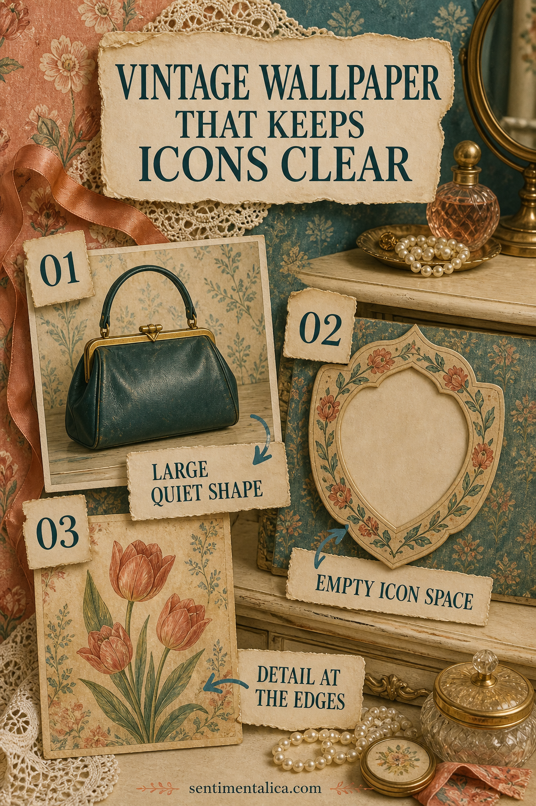
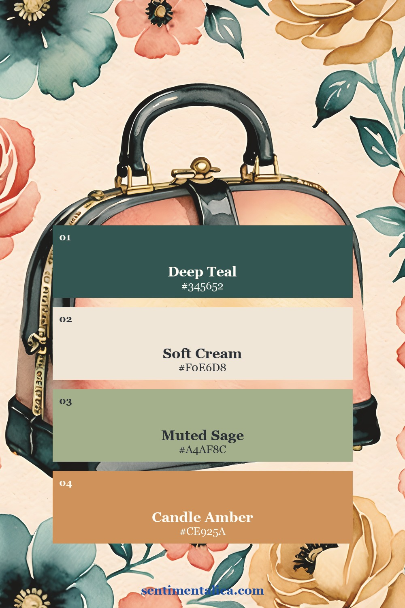
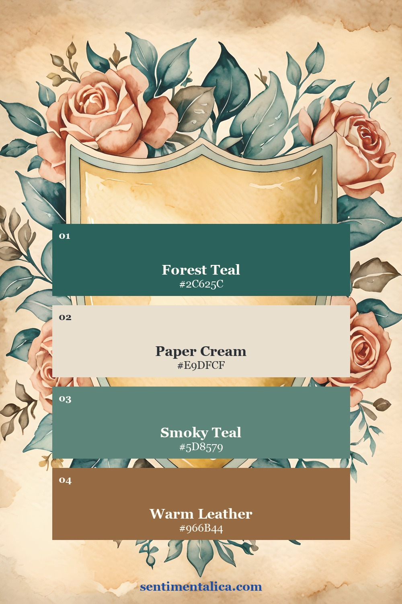
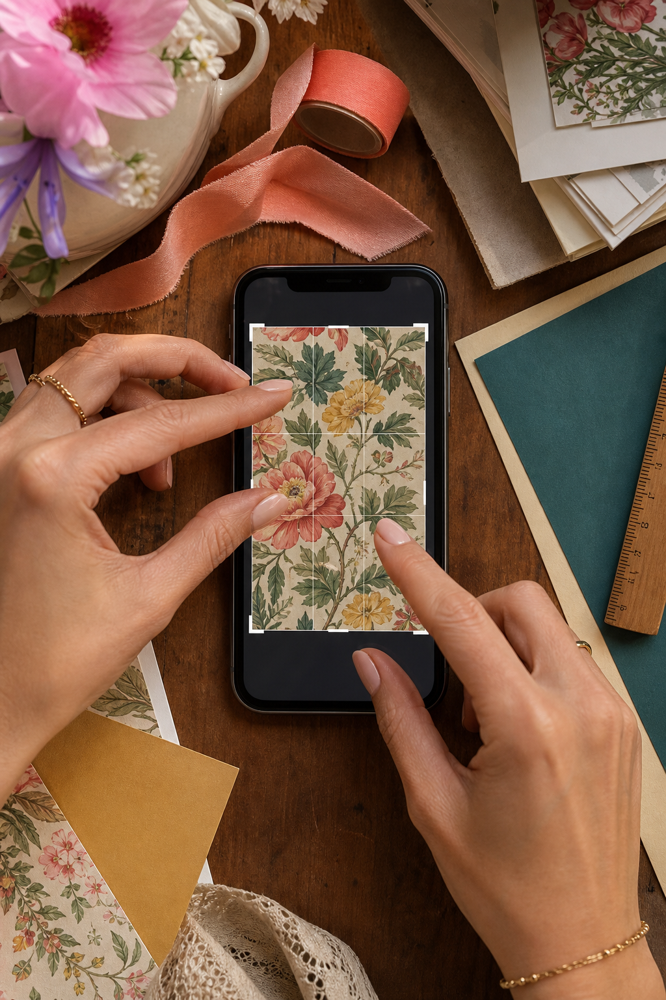
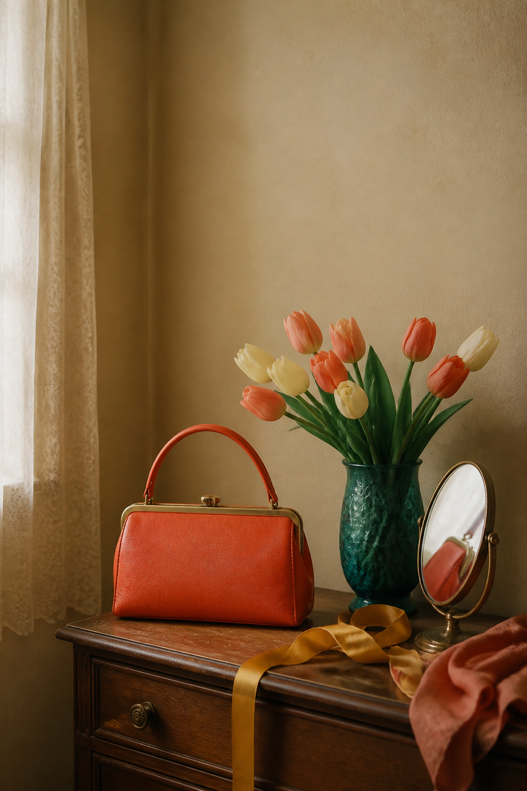
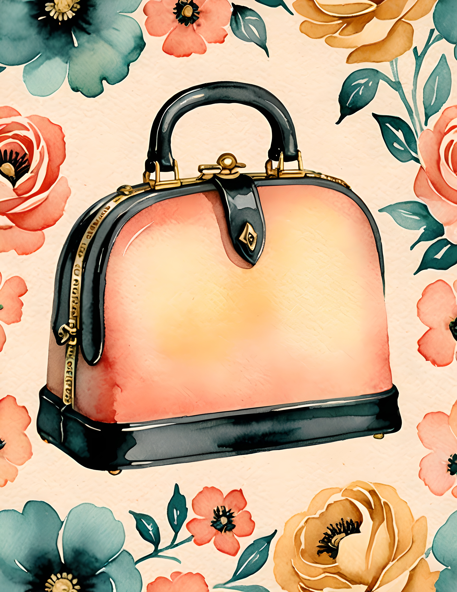
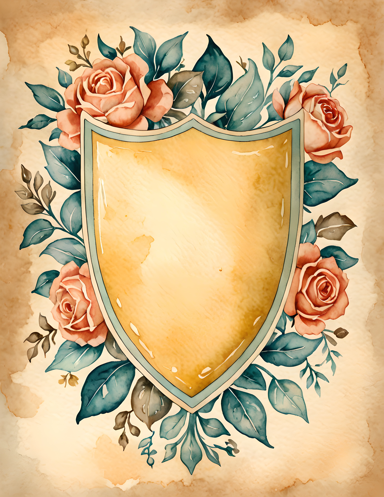

Vintage wallpaper can make a phone feel personal, but the prettiest print is not always the easiest background. Tiny florals compete with app labels, portraits disappear under widgets, and busy checks make every icon look misplaced. The solution is not to remove the vintage character. Choose art with a large quiet shape, open space around the center, or most of its detail near the edges.

Look for one large quiet shape
A handbag, vase, shield, frame, or oval portrait gives the eye a clear anchor. The shape should be simple enough to recognize at a glance and large enough that it does not turn into visual noise behind the icons. Crop so the object sits slightly below the busiest row of information.
If the object contains a very detailed pattern, keep the surrounding background plain. If the object is plain, floral corners or a faded border can add the period feeling without making the whole screen busy.
Use empty centers deliberately
Frames, labels, bookplates, shields, and wreaths with open centers are especially useful for home screens. That blank center is not unfinished. It is where the phone interface can breathe. A warm paper field also makes both light and dark icon styles easier to test.


For a coherent retro palette, try deep teal, cream, muted coral, and one mustard or leather accent. The cream should remain clean enough to separate the other colors. Avoid applying a brown filter to everything. Age is better suggested by paper texture and softened contrast than by mud.
Move small detail to the edges
Flowers, stitches, postage marks, and ornamental lines can live along the sides while the center stays calm. This works particularly well for a lock screen because the time occupies the upper center. If you are cropping a full printable page, test a version that lets some of the border fall outside the phone. The design often becomes stronger when it is not shown in full.

Take a screenshot after you add the wallpaper. Look at the screenshot as a small thumbnail. If the icons remain visible and the main object still reads, the design is doing its job. If everything merges, reduce pattern scale or soften the background slightly.
Choose the kind of nostalgia you want
Vintage is not one mood. It can feel polished and mid-century, sweet and domestic, botanical, cinematic, or warm and seventies-inspired. Decide which memory you want the screen to suggest before choosing the art. This prevents a beautiful but unrelated mix of decades.

Fifties Nostalgia leans into polished objects, florals, and playful portraiture. Dream Retro uses warmer paper, ornamental shapes, and a looser seventies feeling. Both can become readable wallpaper when you crop around one clear object rather than trying to keep every detail.


Keep one shape clear, protect the center, and let the decoration gather at the edges. Your phone will still feel vintage without making you search for every icon. Find more color and paper ideas in the Sentimentalica journal.